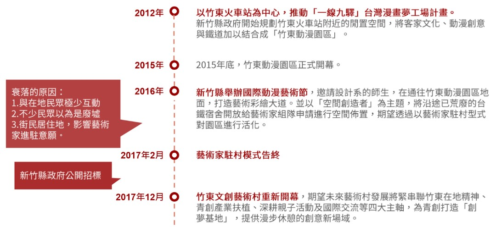
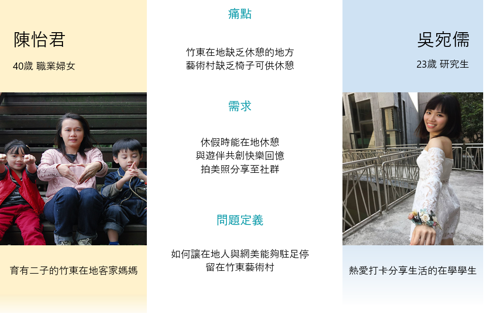
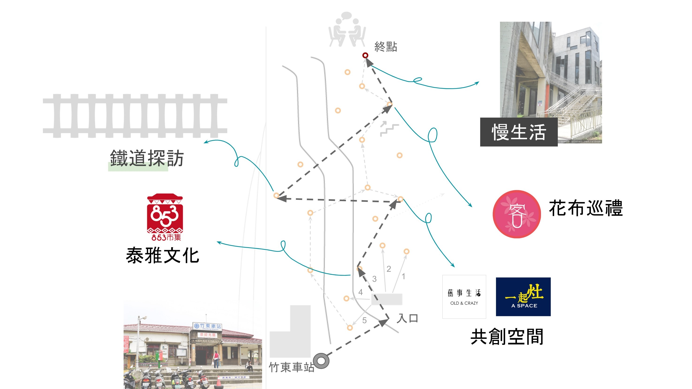
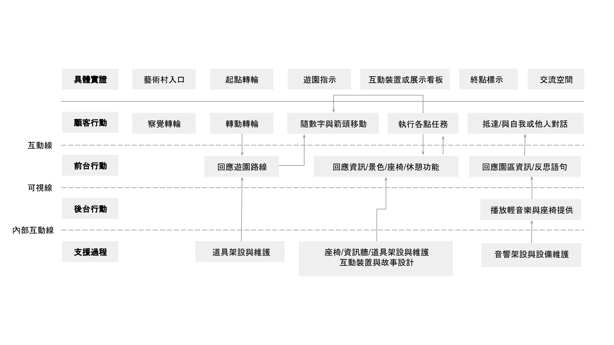
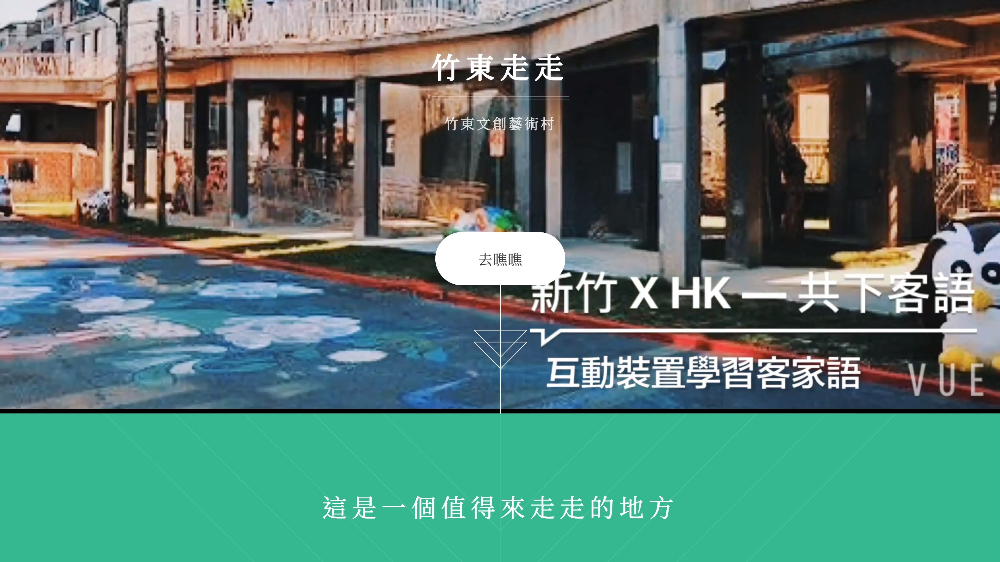
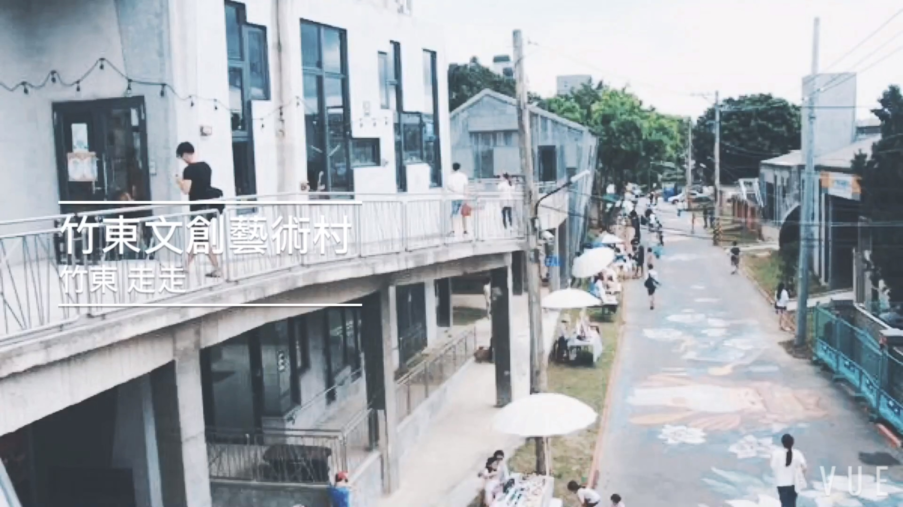

Chutong ZeuZeu
Service Design Project 中文
Role: Service Designer
Introduction
“Chutong ZeuZeu” is a service design project that focuses on township revitalization, taking Chutong Art Village in Hsinchu County as the field. We went through the 4-D service design process, hoping to connect people from city to town and revitalize the place.
We firstly visited, observe the place and interview visitors to discover and familiarize the ecosystem. Then through affinity diagram, we defined the design problem and came up with personas. With a brainstorming session, we developed a proposal for a tour route within the village. Last but not least, we made a mini-film and a website to deliver our service concept and sent out surveys for validation.
Design Process
Discover

Develop
Define
Deliver
Discover
Dated back to 2012, the Chutong Art Village was built beside the spared space next to Chutong train station. The construction was finished and open for business in 2015. However, the operation was unhealthy because the place wasn’t linked to the local community and the lack of strategies. In 2017, the government put it on public bidding and now is operated by the Fantasy Story Inc.
In this phase, we did three filed observation, one interview with the manager and several casual interviews with visitors. Viewpoints and opinions of different stakeholders were collected.
Define
Through the synthesis of affinity diagram, we concluded two types of persona, including (1) a local Hakka mother who has two children and (2) a university student who loves to post pictures on the social media. These two types of persona have the pain points and needs of the following:
Pain points
- There are few places to rest and hang around in Chutong
- The art village lacks seats to rest
Needs
- Having places to rest nearby on holidays
- Creating happy memories with their partners
- Sharing pretty pictures on the social media
Basing on the above pain points and needs, we believed that for our target user, having a memorable site to rest is important. As a result, we defined the design problem as “how to make locals and tourists stay and enjoy at the art village.”
Develop
We proposed a service concept of tour route within the village, placing road signs with arrows and numbers around to guide visitors. We presented diverse Chutong culture with storylines in the route, hoping to introduce Chutong to visitors. Several rest spots are also placed in the route. We hope visitors can enjoy the journey by interacting with road signs, devices, shop owners and create good memories.
Other than the concept, we further planned out one route. In the route, we include elements such as bamboo chairs, floral cloth, aboriginal spices and guide visitors into relevant stores. We also invite visitors to sit down in the village and relax by interacting with dialogue signs. At the end, we lead visitors to an open space where communications happen. Our service blueprint is as follows:
Deliver
At the validation phase, we transformed our service concept into a mini film and a website and sent out surveys at the end of the website. We posted our service concept on social media (LINE, Facebook, and PTT) for three days. We collected 98 questionnaires and 42.3% of the respondents were living in Hsinchu. Half respondents’ age falls in the range of 23 to 40. Besides, 82.5 % of them have never been to the art village.
The survey result showed that for those who have never been to the village, they have a higher willingness to visit the place (score 8.05 out of 10), yet for those who have been there, they have a lower willingness to visit the place again (score 6.47 out of 10). Overall, people have scored 7.77 on the willingness to visit the village.
Basing on the survey result, we believe the Chutong ZeuZeu service concept is attractive to both visitors and locals. We also received feedback regarding the content of the website, which is helpful is this service concept is going to be implemented.